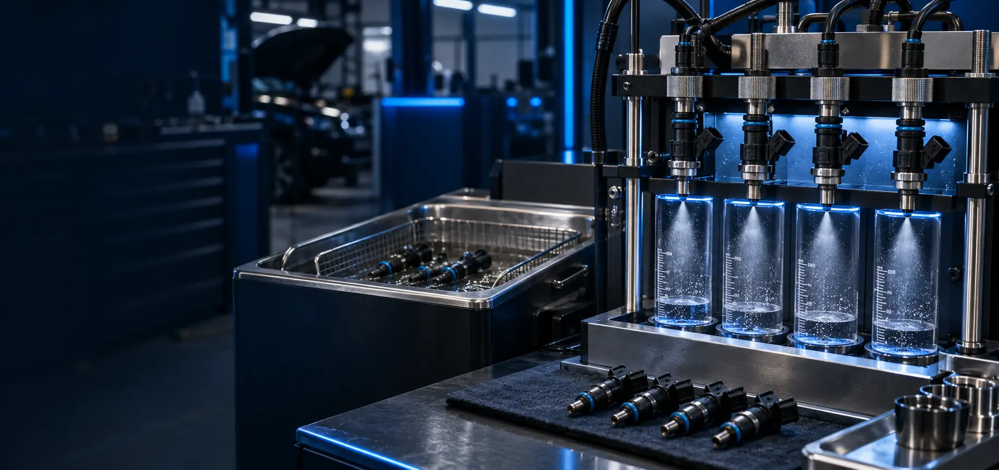

Неровный холостой ход
Обороты плавают, двигатель работает нестабильно или заметно вибрирует.
Чистка и проверка на стенде
Очищаем форсунки, снятые с автомобиля, и проверяем качество распыла. Стоимость снятия и установки рассчитывается отдельно — она зависит от модели автомобиля и доступа.
Когда нужна чистка
Загрязнённые форсунки могут подавать топливо неравномерно. Проверка и промывка помогают оценить их состояние и восстановить нормальный распыл.
Обороты плавают, двигатель работает нестабильно или заметно вибрирует.
Двигатель дольше запускается, особенно после простоя.
Автомобиль начинает потреблять больше топлива при прежнем режиме езды.
Появились провалы при разгоне или слабая реакция на педаль газа.
На стенде видно, насколько равномерно каждая форсунка подаёт топливо.
После промывки повторно проверяем работу комплекта форсунок.

Проверка на оборудовании
Форсунки очищаются и проверяются комплектом. Сравнение факела распыла и подачи помогает увидеть разницу между элементами до и после процедуры.
Поэтапная работа
Базовая цена относится к уже снятой форсунке. Если требуется снятие с автомобиля, стоимость зависит от конструкции двигателя и доступа.
Проверяем корпус, разъёмы и общее состояние комплекта.
Оцениваем подачу и форму распыла перед очисткой.
Удаляем загрязнения профессиональным способом.
Снова проверяем распыл и сравниваем работу форсунок.
Сообщаем состояние каждой форсунки и рекомендации.
Стоимость услуги
Цена указана за промывку одной форсунки, уже снятой с автомобиля. Демонтаж и установка рассчитываются отдельно.
Стоимость снятия и установки зависит от модели автомобиля, конструкции двигателя и доступности форсунок.
Уточнить стоимость снятияОтвечаем просто
Назовите марку, модель, двигатель и количество форсунок — сориентируем по стоимости.
Это стоимость промывки одной форсунки, уже снятой с автомобиля. Снятие и установка в эту цену не входят.
Цена зависит от модели автомобиля, типа двигателя и доступа к топливной рампе. Точную стоимость назовём после уточнения автомобиля или осмотра.
Да. Базовая цена как раз рассчитана для форсунок, которые уже сняты с автомобиля.
Промывку форсунок выполняем по адресу: Омск, 24-я Северная, 157.
Запись на промывку форсунок
Промывка и чистка форсунок
Другие услуги
Все страницы связаны между собой и содержат отдельные цены, адреса и контакты.